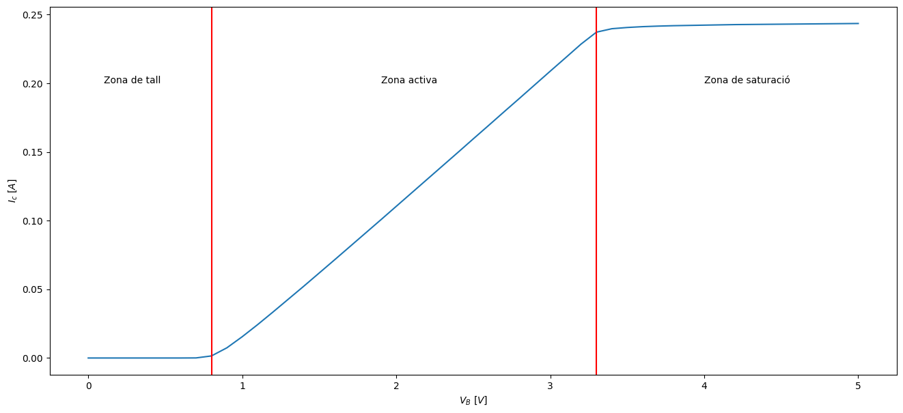
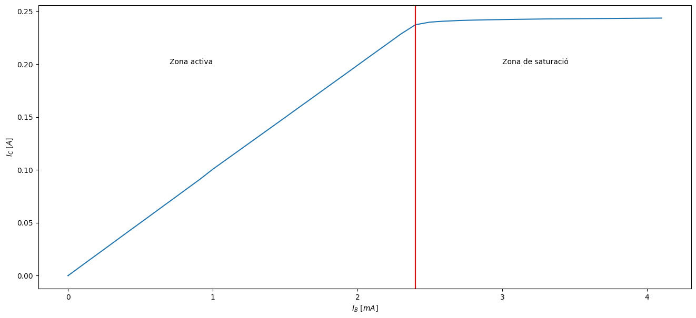
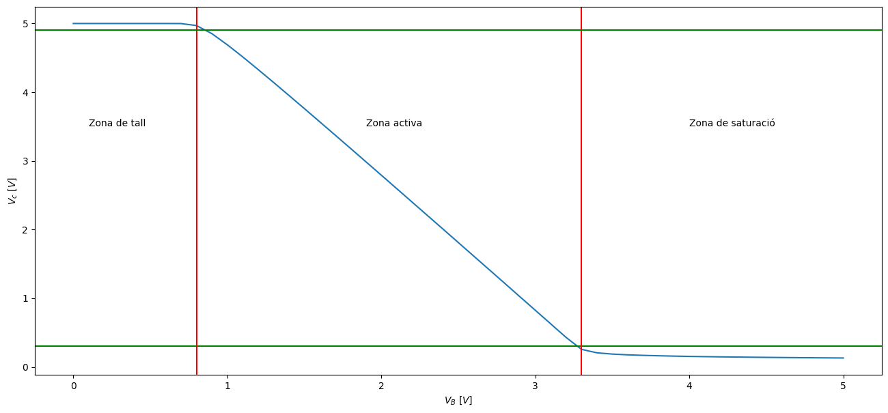
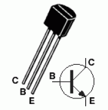

El transistor#
Pàgina en desenvolupament
Encara estem treballant en aquest document.
Esperem oferir-vos properament el seu contingut.
Disculpeu les molèsties.
El transistor amb emissor comú#
Show code cell source
%%html
<iframe src="https://www.falstad.com/circuit/circuitjs.html?ctz=CQAgDOB0YzCsICMZIDYDMAWATKg7HOgJwAciqclIm6I2IcEcApgLSKIBQie9rcietjAkQ-TJjojwIPHQYyIKBACEAhgGdmIAGoB7ADYAXNQHNmnAO5j0wutkmtbEbLyRWbdxET7OkE9x5fO1RHP1sZOQQEJSgEAGFDA2YAYyM9ACddQxNzTlNPFzcnO2wSUSVOIxtUUWFREpdpCEQxREgSIjgiMHxETF5BsFoUTu7evEQSbrhMUiQYEA0ABwBLFLYAE2YAMzUAV2MPVhohaSdaqVEuLP5BK7FTh5bYTlu-UML-SSbOZbFsA4kKgIKxAZIHBARuBjuC6JhQXDXPQwLCgcivhjUdYwUDyIi8QFsQDCWEvES-mIBGcGtS6HBUCBocS7kIGVT7ljjnSMY06G5UUA" width="800" height="600"></iframe>
import pandas as pd
dades = pd.read_csv('data/Control/q1.csv')
dades
Show code cell output
| Vb | Vc | Ib | Ic | |
|---|---|---|---|---|
| 0 | 0.0 | 5.000000 | 4.900000e-12 | 9.900000e-12 |
| 1 | 0.1 | 5.000000 | 4.900000e-12 | 9.900000e-12 |
| 2 | 0.2 | 5.000000 | 4.800000e-12 | 1.000000e-11 |
| 3 | 0.3 | 5.000000 | 4.600000e-12 | 2.060000e-11 |
| 4 | 0.4 | 5.000000 | 6.000000e-13 | 5.300000e-10 |
| 5 | 0.5 | 5.000000 | 2.440000e-10 | 2.490000e-08 |
| 6 | 0.6 | 5.000000 | 1.190000e-08 | 1.200000e-06 |
| 7 | 0.7 | 4.999000 | 5.549000e-07 | 5.550000e-05 |
| 8 | 0.8 | 4.970000 | 1.510000e-05 | 1.500000e-03 |
| 9 | 0.9 | 4.852000 | 7.400000e-05 | 7.400000e-03 |
| 10 | 1.0 | 4.690000 | 1.549000e-04 | 1.550000e-02 |
| 11 | 1.1 | 4.514000 | 2.432000e-04 | 2.430000e-02 |
| 12 | 1.2 | 4.330000 | 3.349000e-04 | 3.350000e-02 |
| 13 | 1.3 | 4.143000 | 4.286000e-04 | 4.290000e-02 |
| 14 | 1.4 | 3.953000 | 5.234000e-04 | 5.230000e-02 |
| 15 | 1.5 | 3.762000 | 6.191000e-04 | 6.190000e-02 |
| 16 | 1.6 | 3.569000 | 7.153000e-04 | 7.150000e-02 |
| 17 | 1.7 | 3.376000 | 8.120000e-04 | 8.120000e-02 |
| 18 | 1.8 | 3.182000 | 9.091000e-04 | 9.090000e-02 |
| 19 | 1.9 | 2.987000 | 1.000000e-03 | 1.006000e-01 |
| 20 | 2.0 | 2.792000 | 1.100000e-03 | 1.104000e-01 |
| 21 | 2.1 | 2.596000 | 1.200000e-03 | 1.202000e-01 |
| 22 | 2.2 | 2.400000 | 1.300000e-03 | 1.300000e-01 |
| 23 | 2.3 | 2.204000 | 1.400000e-03 | 1.398000e-01 |
| 24 | 2.4 | 2.008000 | 1.500000e-03 | 1.496000e-01 |
| 25 | 2.5 | 1.811000 | 1.600000e-03 | 1.595000e-01 |
| 26 | 2.6 | 1.614000 | 1.700000e-03 | 1.693000e-01 |
| 27 | 2.7 | 1.417000 | 1.800000e-03 | 1.792000e-01 |
| 28 | 2.8 | 1.220000 | 1.900000e-03 | 1.890000e-01 |
| 29 | 2.9 | 1.022000 | 2.000000e-03 | 1.989000e-01 |
| 30 | 3.0 | 0.824765 | 2.100000e-03 | 2.088000e-01 |
| 31 | 3.1 | 0.627158 | 2.200000e-03 | 2.186000e-01 |
| 32 | 3.2 | 0.429473 | 2.300000e-03 | 2.285000e-01 |
| 33 | 3.3 | 0.255856 | 2.400000e-03 | 2.372000e-01 |
| 34 | 3.4 | 0.205486 | 2.500000e-03 | 2.397000e-01 |
| 35 | 3.5 | 0.187098 | 2.600000e-03 | 2.406000e-01 |
| 36 | 3.6 | 0.176139 | 2.700000e-03 | 2.412000e-01 |
| 37 | 3.7 | 0.168376 | 2.800000e-03 | 2.416000e-01 |
| 38 | 3.8 | 0.162379 | 2.900000e-03 | 2.419000e-01 |
| 39 | 3.9 | 0.157500 | 3.000000e-03 | 2.421000e-01 |
| 40 | 4.0 | 0.153392 | 3.100000e-03 | 2.423000e-01 |
| 41 | 4.1 | 0.149845 | 3.200000e-03 | 2.425000e-01 |
| 42 | 4.2 | 0.146727 | 3.300000e-03 | 2.427000e-01 |
| 43 | 4.3 | 0.143946 | 3.400000e-03 | 2.428000e-01 |
| 44 | 4.4 | 0.141437 | 3.500000e-03 | 2.429000e-01 |
| 45 | 4.5 | 0.139151 | 3.600000e-03 | 2.430000e-01 |
| 46 | 4.6 | 0.137054 | 3.700000e-03 | 2.431000e-01 |
| 47 | 4.7 | 0.135116 | 3.800000e-03 | 2.432000e-01 |
| 48 | 4.8 | 0.133316 | 3.900000e-03 | 2.433000e-01 |
| 49 | 4.9 | 0.131634 | 4.000000e-03 | 2.434000e-01 |
| 50 | 5.0 | 0.130058 | 4.100000e-03 | 2.435000e-01 |
Show code cell source
%matplotlib inline
import matplotlib.pyplot as plt
import numpy as np
Vb=dades['Vb']
Vc=dades['Vc']
Ib=dades['Ib']*1000
Ic=dades['Ic']
%matplotlib inline
plt.rcParams['figure.figsize'] = (16,7) # determines the dimensions (size of the figure)
fig = plt.figure()
plt.plot(Vb, Ic)
plt.xlabel('$V_B \ [V]$')
plt.ylabel('$I_c \ [A]$')
plt.text(0.1,0.2,'Zona de tall')
plt.axvline(x=0.80, color='red')
plt.text(1.9,0.2,'Zona activa')
plt.axvline(x=3.3, color='red')
plt.text(4,0.2,'Zona de saturació')
plt.show()

El transistor en zona activa. Electrònica analògica#
Show code cell source
%matplotlib inline
plt.rcParams['figure.figsize'] = (16,7) # determines the dimensions (size of the figure)
fig = plt.figure()
plt.plot(Ib, Ic)
plt.xlabel('$I_B \ [mA]$')
plt.ylabel('$I_C \ [A]$')
#plt.text(0.1,3.5,'Zona de tall')
#plt.axvline(x=0.80, color='red')
plt.text(0.7,0.2,'Zona activa')
plt.axvline(x=2.4, color='red')
plt.text(3,0.2,'Zona de saturació')
plt.show()

El transistor en tall / saturació. Electrònica digital#
Show code cell source
%matplotlib inline
import matplotlib.pyplot as plt
plt.rcParams['figure.figsize'] = (16,7) # determines the dimensions (size of the figure)
fig = plt.figure()
plt.plot(Vb, Vc)
plt.xlabel('$V_B \ [V]$')
plt.ylabel('$V_c \ [V]$')
plt.text(0.1,3.5,'Zona de tall')
plt.axhline(y=0.3, color='green')
plt.axvline(x=0.80, color='red')
plt.text(1.9,3.5,'Zona activa')
plt.axvline(x=3.3, color='red')
plt.text(4,3.5,'Zona de saturació')
plt.axhline(y=4.9, color='green')
plt.show()

Circuits de conmutació. El multivibrador astable.#
Podem aprofitar que la càrrega i descarrega d’un condensador no és instantània, ja que depèn de la resistència per la qual agafa o deixa anar electrons, per retardar el canvi tall / saturació del transistor. Apareix així un temps característic \(\tau = R C\).
Un circuit típic que aprofita aquest recurs és el multivibrador astable [Guz10] :
Show code cell source
%%html
<iframe src="https://www.falstad.com/circuit/circuitjs.html?ctz=CQAgjCAMB0l3BWEAOaAmZYCcB2BzkcBmLUhJBSECqhAUwFowwAoAd3DDRABZkQ0kfnyjsBQ3vwzD+kMdMkgiyHorkAnTtxHNuYHADYoSohvEzz4Q8bCRBLTQpEL9Rqrfublqkd6tulewBjLX9LV2MYeEgwfgYYHhiyAzQcNCwwIgMcHChYGJYQvwiXayoo+FilaGzyHgNkBBwsfFrVCtYOYus-NETRABcBAgEEI16xmxAGImgMykaeMCX8HEgiXISeBFsUwRxYsAQMcDgQABM6ADMAQwBXABsB+QkSkbRJuQ5So0EpT5YQz+oyMuhBUxgBhWRCWyBhGRIbhqKihPByBgymEwejOl1uj2eHDBETBfXKLAASqERFC1MZ+khynkECwAOahVJ6LhKSDtUTs3ppJQqHl8uQAD3ACCwAm5sSoaCOvHARgAwqxJUR9LKiCYpGAjKoDSBVWgWJLGgIDO5ILk0AZdUajABFDVKLAK6W8bn27QqkDOs2JXXYbjAtB9AT9dxoAD6HwMscgsaWdljCCT0DAsaY8djXFjRBYwYEQuBplUZJs2YTSZTHnTmZ4OZr+ezRZLREE4BORGOKqZyHzGDrqbjGYSLbzQ4763APCNJxJ1uMOGHQ+TY8bMGzubja6LAHtwLraYbIKQUNAVBeEFqI7ysIRZPkYsYcSADCwgA" width="800" height="600"></iframe>
Productes comercials#
Un transistor molt utilitzat és el BC337
